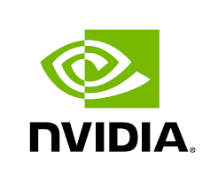
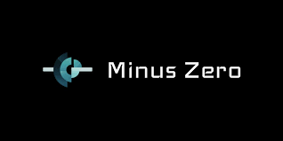

|
Animesh Guptaअनिमेष गुप्ता
I am currently working as Machine Learning Engineer Intern at MVisionAI. I have completed my Bachelors in Electronics and Computer Science from Thapar University, India. Previously, I worked as a Research Intern at UiT, Norway, here I worked on project related to Coreset Subset Selection domain. I have also worked as a research intern at SketchX lab, Unviersity of Surrey, London. At SketchX, I worked on research project dealing with Sketch Visual Understanding.
I also worked on industrial projects which try to solve Lane Detection, and Road Segmentation for autonomous cars.
Email /
Google Scholar /
Twitter /
Github /
Resume/CV
|

|
What's New
| [May 2023] |
Our paper Big-Bench is accepted at TMLR 2023. |
| [Feb 2023] |
Started interning at MVision AI |
| [July 2022] |
Adaptive Fine-Grained Sketch-Based Image Retrieval is accpeted in the ECCV 2022. |
| [May 2022] |
Joined as Research Intern at UiT - The Arctic University of Norway. |
| [Mar 2022] |
Joined as Research Intern at NVIDIA, India |
| [July 2021] |
Joined as Research Intern at SketchX, London |
| [June 2021] |
Recieved Grant by Weights & Biases for ML Reproducibility Challenge, Spring 2021. |
| [Oct 2020] |
Joined as Part-time Research Engineer at Minus Zero |
| [Feb 2021] |
Serving as a reviewer for ML Reproducibility Challenge 2020. |
|
Research
I'm interested in developing methods which can effectively train neural networks with limited data. I'm also interested in developing models which can work Multi-Modalities setting like text and sketch.
|
|
|
Data-Efficient Training of CNNs and Transformers with Coresets: A Stability Perspective
Animesh Gupta,
Irtiza Hassan,
Dilip K Prasad,
Deepak K Gupta,
In Submission WACV 2024
Abstract
/
Code
/
Paper
/
BibTex
Coreset selection is among the most effective ways to reduce the training time of CNNs, however, only limited is known on how the resultant models will behave under variations of the coreset size, and choice of datasets and models. Moreover, given the recent paradigm shift towards transformer-based models, it is still an open question how coreset selection would impact their performance. There are several similar intriguing questions that need to be answered for a wide acceptance of coreset selection methods, and this paper attempts to answer some of these. We present a systematic benchmarking setup and perform a rigorous comparison of different coreset selection methods on CNNs and transformers. Our investigation reveals that under certain circumstances, random selection of subsets is more robust and stable when compared with the SOTA selection methods. We demonstrate that the conventional concept of uniform subset sampling across the various classes of the data is not the appropriate choice. Rather samples should be adaptively chosen based on the complexity of the data distribution for each class. Transformers are generally pretrained on large datasets, and we show that for certain target datasets, it helps to keep their performance stable at even very small coreset sizes. We further show that when no pretraining is done or when the pretrained transformer models are used with non-natural images (e.g. medical data), CNNs tend to generalize better than transformers at even very small coreset sizes. Lastly, we demonstrate that in the absence of the right pretraining, CNNs are better at learning the semantic coherence between spatially distant objects within an image, and these tend to outperform transformers at almost all choices of the coreset size.
@article{gupta2023data,
title={Data-Efficient Training of CNNs and Transformers with Coresets: A Stability Perspective},
author={Gupta, Animesh and Hassan, Irtiza and Prasad, Dilip K and Gupta, Deepak K},
journal={Paper preprint Paper:2303.02095},
year={2023}
}
|
|
|
Beyond the Imitation Game: Quantifying and extrapolating the capabilities of language models
BIG-bench authors
TMLR 2023
Abstract
/
Code
/
Paper
/
BibTex
Language models demonstrate both quantitative improvement and new qualitative capabilities with increasing scale. Despite their potentially transformative impact, these new capabilities are as yet poorly characterized. In order to inform future research, prepare for disruptive new model capabilities, and ameliorate socially harmful effects, it is vital that we understand the present and near-future capabilities and limitations of language models. To address this challenge, we introduce the Beyond the Imitation Game benchmark (BIG-bench). BIG-bench currently consists of 204 tasks, contributed by 450 authors across 132 institutions. Task topics are diverse, drawing problems from linguistics, childhood development, math, common-sense reasoning, biology, physics, social bias, software development, and beyond. BIG-bench focuses on tasks that are believed to be beyond the capabilities of current language models. We evaluate the behavior of OpenAI's GPT models, Google-internal dense transformer architectures, and Switch-style sparse transformers on BIG-bench, across model sizes spanning millions to hundreds of billions of parameters. In addition, a team of human expert raters performed all tasks in order to provide a strong baseline. Findings include: model performance and calibration both improve with scale, but are poor in absolute terms (and when compared with rater performance); performance is remarkably similar across model classes, though with benefits from sparsity; tasks that improve gradually and predictably commonly involve a large knowledge or memorization component, whereas tasks that exhibit "breakthrough" behavior at a critical scale often involve multiple steps or components, or brittle metrics; social bias typically increases with scale in settings with ambiguous context, but this can be improved with prompting.
@article{srivastava2023beyond,
title={Beyond the Imitation Game: Quantifying and extrapolating the capabilities of language models},
author={BIG-bench authors},
journal={Transactions on Machine Learning Research},
issn={2835-8856},
year={2023},
url={https://openreview.net/forum?id=uyTL5Bvosj},
note={}
}
|
|
|
Adaptive Fine-Grained Sketch-Based Image Retrieval
Ayan Kumar Bhunia,
Aneeshan Sain,
Parth Hiren Shah,
Animesh Gupta,
Pinaki Nath Chowdhury,
Tao Xiang,
Yi-Zhe Song
ECCV 2022
Abstract
/
Code
/
Paper
/
BibTex
The recent focus on Fine-Grained Sketch-Based Image Retrieval (FG-SBIR) has shifted towards generalising a model to new categories without any training data from them. In real-world applications, however, a trained FG-SBIR model is often applied to both new categories and different human sketchers, i.e., different drawing styles. Although this complicates the generalisation problem, fortunately, a handful of examples are typically available, enabling the model to adapt to the new category/style. In this paper, we offer a novel perspective -- instead of asking for a model that generalises, we advocate for one that quickly adapts, with just very few samples during testing (in a few-shot manner). To solve this new problem, we introduce a novel model-agnostic meta-learning (MAML) based framework with several key modifications: (1) As a retrieval task with a margin-based contrastive loss, we simplify the MAML training in the inner loop to make it more stable and tractable. (2) The margin in our contrastive loss is also meta-learned with the rest of the model. (3) Three additional regularisation losses are introduced in the outer loop, to make the meta-learned FG-SBIR model more effective for category/style adaptation. Extensive experiments on public datasets suggest a large gain over generalisation and zero-shot based approaches, and a few strong few-shot baselines.
@InProceedings{adaptivefgsbir,
author = {Ayan Kumar Bhunia and Aneeshan Sain and Parth Hiren Shah and Animesh Gupta and Pinaki Nath Chowdhury and Tao Xiang and Yi-Zhe Song},
title = {Adaptive Fine-Grained Sketch-Based Image Retrieval},
booktitle = {ECCV},
month = {October},
year = {2022}
}
|
|
|
Machine Learning Engineer Intern, MVisionAI
February, 2023 - present
Supervisors: Dr. Saad Ullah Akram
- Working on easing treatment plan for radiotherapy using Image Registration. Radiotherapy involves multiple imaging modalities, e.g. full-field-of-view Computed Tomography (CT) scans is used for planning and Magnetic Resonance Imaging (MRI) scans is used for tumour segmentation.
- Created an efficient library to facilitate multiple datasets and state-of-the-art algorithms.
- Adapted RWCNet and Transmorph codebases to reproduce the results of the OASIS and NLST datasets. Formed baseline for the AbdomenCTCT and NLST datasets.
|
|
|
Research Intern, University of Tromso
May 2022 - November 2022
Supervisors: Dr. Deepak Gupta, Dr. Irtiza Hasan, and Dr. Dilip Prasad
- Created a systematic benchmarking setup for different coreset methods on multiple CNNs and Transformers.
- Demonstrated that the conventional concept of uniform subset sampling across the various classes of the data is not the appropriate choice
- The findings of the internship led to a research publication, currently under review at a Machine Learning Journal.
|
|

|
Research Intern, NVIDIA
March 2022 - May 2022
Experimented with latest Real-Time Lane Detection work and vision transformers for an improved solution for DRIVE-Perceptron platform with faster inference and performance.
|
|
|
Research Intern, SketchX
July 2021 - March 2022
Supervisor: Dr. Yi-Zhe Song
-
Worked on Fine-Grained Sketch Based Image Retrieval and Category-Level Sketch Based Image Retrieval.
-
Contributed to the paper which created an adaptive Fine-Grained Sketch-Based Image Retrieval model. It adapts to new categories or different sketching patterns at test time, published in ECCV 2022
|
|
|
Intern, GirlScript Summer of Code
March 2021 - June 2021
-
Face-X: Added NasNet and Xception model architecture for Face Recognition. [PRs]
-
Comet.Box: Added YOLOv5 example for the object detection. [PRs]
|
|

|
Research Engineer, Minus Zero
October 2020 - March 2021
-
Worked on the Road Segmentation problem for autonomous cars in India.
-
Used FCHarDNet as base architecture and trained on the Indian driving dataset (10k images and 34 classes).
|
I borrowed this website layout from here!
|
|